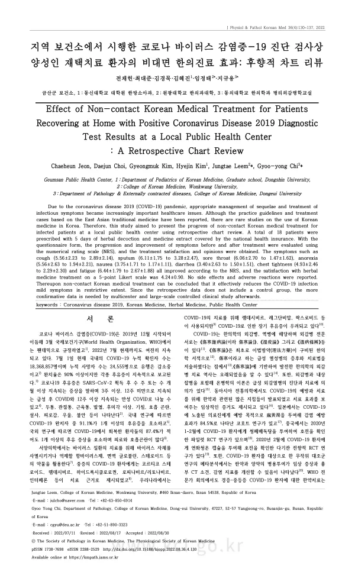

Effect of Non-contact Korean Medical Treatment for Patients Recovering at Home with Positive Coronavirus Disease 2019 Diagnostic Test Results at a Local Public Health Center : A Retrospective Chart Review
지역 보건소에서 시행한 코로나 바이러스 감염증-19 진단 검사상 양성인 재택치료 환자의 비대면 한의진료 효과: 후향적 차트 리뷰
Jeon C, Choi D, Kim G, Kim H, Leem J, Chi Gy
Journal of Physiology & Pathology in Korean Medicine 36(4):130-137

첫 장 · 오픈액세스First page · open access
논문 소개Summary
2022년 봄 코로나19 재택치료자가 크게 늘었을 때, 확진되었으나 입원하지 않은 사람들은 증상을 스스로 견뎌야 했습니다. 지역 보건소에서 비대면으로 한의 진료를 제공하는 사업이 그때 이루어졌고, 이 연구는 그 진료기록을 되돌아본 것입니다.
금산군보건소에서 2022년 4월 11일부터 5월 6일까지, 확진 후 대증치료 대상자로 분류되어 자가격리 중인 재택치료자 가운데 자발적으로 비대면 진료를 신청한 만 20~49세 환자를 대상으로 했습니다. 문자메시지로 설문을 보내 인적사항과 증상 정도를 받고, 전화 진료로 과거력과 복용 약물을 확인한 뒤 탕약과 보험한약을 각 5일분 처방했습니다. 7일 뒤 다시 설문을 보내 증상 변화와 만족도, 부작용을 받았습니다. 처방은 합의된 기준을 따랐습니다. 기허 증상을 보이면 삼소음, 전신 증상을 호소하면 쌍패탕, 그 밖에 형방패독산 가미방 등이었습니다. 기존에 먹던 약은 모두 유지했습니다.
사전·사후 설문에 모두 답한 18명의 기록이 분석되었습니다. 기침, 가래, 인후통, 식욕부진, 오심, 설사, 흉민, 피로를 수치평가척도로 견줬습니다. 결과는 한 방향이 아니었습니다. 인후통과 식욕부진처럼 뚜렷이 줄어든 증상이 있었던 반면, 환자에 따라 기침이나 흉민이 오히려 올라간 경우도 있었습니다. 진료 만족도는 응답한 17명에서 5점 만점에 평균 4.24점이었습니다.
이 연구가 남기는 것은 효과의 증명이 아니라 사업의 기록입니다. 전화로만 진료하는 여건에서는 바이러스가 음성으로 바뀌었는지 확인할 수 없어, 목표를 증상 소실로 잡을 수밖에 없었습니다. 그 제약까지 함께 적어 둔 점이 이 기록의 값어치입니다.
한계는 여럿입니다. 18명이고 대조군이 없으며, 코로나19 증상은 대개 시간이 지나면 좋아지므로 호전을 치료 덕분이라 할 수 없습니다. 스마트폰 설문에 답할 수 있는 20~49세만 대상이어서 고령 환자는 애초에 빠졌습니다. 만족도가 높았다는 것도 자발적으로 신청한 사람들의 답이라는 점을 감안해야 합니다.
In spring 2022, when the number of COVID-19 patients recovering at home rose sharply, those who tested positive but were not hospitalised had to manage symptoms themselves. A local public health centre ran a programme providing non-contact Korean medicine care at that time, and this study reviewed its records.
At Geumsan County Public Health Center between 11 April and 6 May 2022, patients aged 20 to 49 who were self-isolating at home under symptomatic-care classification and who voluntarily requested non-contact consultation were included. Questionnaires were sent by text message to collect demographic details and symptom severity; telephone consultation established history and current medication; and five days each of herbal decoction and insurance-covered herbal preparations were prescribed. A second questionnaire seven days later collected symptom change, satisfaction and adverse effects. Prescribing followed agreed criteria — Samso-eum for qi-deficiency presentations, Ssangpae-tang for systemic symptoms, modified Hyungbangpaedok-san and others as indicated. All existing medications were continued.
Records of the 18 patients who completed both questionnaires were analysed, comparing cough, sputum, sore throat, anorexia, nausea, diarrhoea, chest tightness and fatigue on numerical rating scales. The results did not point one way: sore throat and anorexia fell clearly, while in some patients cough or chest tightness rose instead. Satisfaction averaged 4.24 out of 5 among the 17 who responded.
What this study leaves is a record of a public programme rather than proof of efficacy. Telephone-only consultation made it impossible to track viral clearance, so resolution of symptoms had to serve as the goal. Documenting that constraint alongside the results is what gives the record its value.
Limitations are several. With 18 patients and no control group, and given that COVID-19 symptoms generally improve with time, improvement cannot be attributed to treatment. Restricting eligibility to those aged 20–49 able to complete smartphone questionnaires excluded older patients entirely. High satisfaction must also be read as the response of people who volunteered for the service.
인용Cite
Jeon C, Choi D, Kim G, Kim H, Leem J, Chi Gy. Effect of Non-contact Korean Medical Treatment for Patients Recovering at Home with Positive Coronavirus Disease 2019 Diagnostic Test Results at a Local Public Health Center : A Retrospective Chart Review. Journal of Physiology & Pathology in Korean Medicine. 2022;36(4):130-137. doi:10.15188/kjopp.2022.08.36.4.130